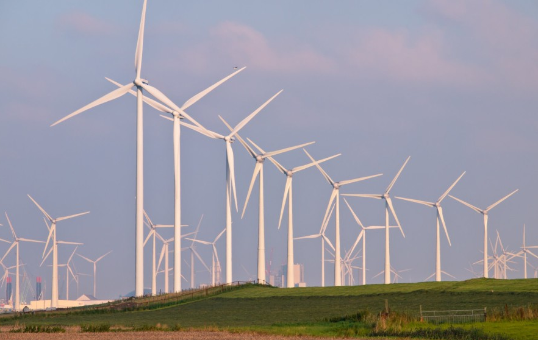

History
People have used wind energy to propel boats along the Nile River as early as 5,000 BC.
By 200 BC, simple wind-powered water pumps were used in China,
and windmills with woven-reed blades were grinding grain in Persia and the Middle East.
In the U.S., American colonists used windmills to grind grain, pump water, and cut wood at sawmills.
Homesteaders and ranchers installed thousands of wind pumps as they settled the western United States.
In the late 1800s and early 1900s, small wind-electric generators (wind turbines) were also widely used.

Charles Brush developed one of the first windmills in the U.S. in 1888 (pictured above).
This windmill was used to power around 100 lightbulbs.
In the early 1980s, with country-wide oil shortages, alternative energy sources were sought after. In California, thousands of wind turbines were constructed.
In the 90s national and state financial incentives were established to promote renewable energy use. Today, the share of U.S. electricity generation from wind energy has grown from less than 1% in 1990 to about 10.2% in 2022.
Projects of Interest
Los Vientos Wind Farm, Texas
Capacity: 910MW
Completed: August 2016
Owner: Duke Energy Renewables
Duke Energy began construction of this large windfarm project in 2012 with five phases and completed the project in 2016.
The first project phase constructed allowed for the production of 400MW of emission-free electricity, which is enough to collectively power approximately 120,000 homes.
Each wind turbine has a hub height of 295ft and rotor diameter of 334ft. The wind turbine foundations are made of more than 680 cubic yards of concrete and 66t of steel reinforcement.
CPS Energy, a utility company purchases electricity under a 25 year Power Purchase Agreement (PPA) in which the electricity is sold at a discounted rate. Austin Energy,
one of the largest utilities in the country and the electricity supplier for Austin, purchases output and the associated renewable energy credits that are mandated for utility companies.

The Los Vientos Wind Farm (pictured above) covers approximately 50,000 acres or 75 square miles of land.
Block Island Wind Farm, Rhode Island
Capacity: 30MW
Completed: August 2016
Owner: Orsted US Offshore Wind
Block Island Wind Farm is a 30 MW off-shore wind project that consist of 5 Alstom Haliade 150-6MW wind turbines. These immense turbines stand at 600 feet tall and can withstand a category three storm.
Power is transmitted along a 21 mile transmission submarine power cable buried under the ocean floor. The total construction cost for this project was $290 million dollars.